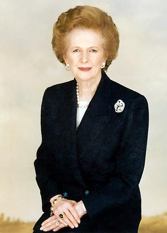

Margaret Thatcher

Đối với người Trung Quốc, “người phụ nữ mạnh mẽ” luôn được mọi người tôn kính, đặc biệt là những cô gái trẻ có tài năng, thích lấy “những phụ nữ mạnh mẽ” làm kiểu mẫu để học tập, rồi khát khao mình cũng sẽ trở thành một “người phụ nữ mạnh mẽ” chân chính.
Nhìn lại thế giới ngày nay, “người phụ nữ mạnh mẽ” không phải là con số ít. Trong đó, nổi tiếng nhất, và được tranh luận nhiều nhất chính là Margaret Thatcher – nữ Thủ tướng đầu tiên nước Anh. Bà có tên riêng là “người phụ nữ sắt”, và bà rất tự hào về tên riêng của mình.
Trong xã hội nước Anh, xưa nay đều phân chia giai cấp rõ ràng. Margaret Thatcher tuy xuất thân trong một gia đình buôn bán tạp hóa bình thường, ở một thị trấn nhỏ bé ít người biết đến, nhưng con đường công danh thuận lợi, đánh bại được phái mạnh, làm nghiêng ngả triều đình, trở thành vị nữ Thủ tướng đầu tiên trong lịch sử nước Anh và lịch sử châu Âu. Trong hai nhiệm kỳ sau đấu tranh và liên tiếp thắng lợi, trở thành vị nữ Thủ tướng liên tiếp 3 nhiệm kỳ đầu tiên của nước Anh từ 160 năm trở lại đây, cũng là vị nữ Thủ tướng liên tiếp 3 nhiệm kỳ lần đầu tiên trên thế giới đương đại, trở thành nhân vật nổi tiếng, được cả thế giới quan tâm.
Cũng như những nhà chính trị khác, bà Thatcher nổi tiếng vì tài năng và sự thẳng tính của mình. Bà không bao giờ chịu khuất phục, can đảm gan dạ, trước sau như một, nói được làm được, quyết không vì những việc làm tổn thương đến uy tín của mình mà không dám tỏ rõ cách làm của mình, cũng không vì mình là một vị Thủ tướng mà yêu cầu mọi người khoan dung tha thứ cho mình. Đối với tính cách “sắt”, tác phong “sắt” trong con người của bà, dư luận vẫn có khen có chê. Người chê thì cho bà là người chuyên quyền độc đoán, như vậy là người phản dân chủ, thậm chí là “độc đoán” của “hình thức bán đế vương”. Người khen thì cho rằng, bà Thatcher có tác phong kiên cường mạnh mẽ, có thể sánh ngang với Nữ hoàng Elizabeth, Nữ hoàng Victoria trong lịch sử nước Anh, sánh với Churchill – Thủ tướng của thời kỳ Đại chiến thế giới lần thứ hai. Nhưng bản thân bà Thatcher thì nói rằng: “Nếu như tôi không thể dấy lên một cuộc tranh luận hoặc đánh giá nào, thì cả cuộc đời tôi chỉ là một người vô dụng. Trong cuộc đời phàm là người có hành động đều vấp phải những khó khăn của người khác. Nếu như mục tiêu chủ yếu của tôi là ‘tôi chỉ hy vọng nhận được cảm tình tốt của người khác, mà không chấp nhận sự phê bình của người khác’, như vậy thì trên thế giới này tôi sẽ sống một đời tầm thường, vô vị và trống rỗng. Đây chính là một ý niệm rất “sắt”.
Khi bà xuất bản quyển tự truyện thứ hai và nhận được sự phỏng vấn của đài truyền hình, bà nói: “Tôi sở dĩ ra mặt biểu thị thái độ, là bởi tôi đã nói với châu Âu không, không, không. Chữ không, không này, bây giờ đã trở thành phải, phải”. Bà cho rằng, nước Anh ký kết điều ước Maastricht là sai lầm đối với toàn thế giới và cả đối với nước Anh. Do tính cách “sắt”, tác phong “sắt” này đã đưa bà lên vũ đài chính trị mà xưa nay nam giới luôn chiếm địa vị thống trị. Sự kiện này đã làm chấn động thế giới và được lịch sử lưu danh.
NGUYÊN NHÂN “NGƯỜI PHỤ NỮ SẮT
Thatcher sinh ngày 13 tháng 10 năm 1925 tại Gransem, một thị trấn nhỏ nước Anh, ông nội và cha đều là những nhà buôn bán nhỏ, lúc bà học tiểu học và trung học cũng chỉ là một học sinh bình thường. Người cha từ nhỏ thất học, nếm trải được sự cực nhục của kẻ không có văn hóa, rất coi trọng việc giáo dục cho Thatcher và chị của bà, ông quản lý thời gian rất nghiêm ngặt, những ngày chủ nhật không cho phép hai chị em đi xem phim. Có lúc, Thatcher than thở: “Các bạn của con ai cũng được đi xem phim cả!” Cha của bà nghiêm khắc nói: “Con tất nhiên phải có chủ kiến của mình”. Nhờ sự quản lý rất nghiêm của cha mẹ, Thatcher đến khi lên đại học cũng chưa từng tham gia khiêu vũ, phần lớn thời gian đều dành vào việc chuyên cần rèn luyện học tập.
Ngoài việc học, Thatcher và Muril – chị của bà, từ nhỏ đã biết giúp cha mẹ làm việc. Năm Thatcher 10 tuổi, đến cửa hàng tạp hóa của cha mẹ đỡ đần việc mua bán. Lớn lên một chút, mẹ dạy cho bà nấu cơm, xào mì, giặt quần áo, thu xếp, dọn dẹp nhà cửa. Từ nhỏ bà đã học cách tự xử lý cuộc sống, đón tiếp khách khứa.
Năm 18 tuổi, bà thi vào Học viện Sommevil Đại học Oxford, đó là học viện nữ giới sớm nhất ở Oxford. Indira Gandhi – cố Thủ tướng Ấn Độ đã từng học ở trường này. Lúc bấy giờ chí hướng của Thatcher là học luật, nhưng lại chọn học ngành văn học. Vừa bước chân vào đại học Oxford, bà đã tham gia vào Câu lạc bộ Đảng Bảo thủ của trường học, cùng kết mối duyên không lý giải được với chính trị, với những nữ sinh ở bên ngoài. Năm thứ hai, nhân kỳ nghỉ hè trở về quê cũ, Thatcher ra sức làm việc kiếm tiền, và nhờ đó mua một chiếc xe đạp, bà có thể hoạt động khắp nơi. Ở Đại học, không những thành tích học tập của bà đứng hàng thứ hai trong lớp, mà bà còn là phần tử kích động nổi tiếng cả trường. Năm thứ ba được các bạn bầu là Chủ tịch Hiệp hội Đảng Bảo thủ ở Đại học Oxford. Mỗi tối thứ sáu, Hiệp hội này tổ chức hoạt động giải trí vui vẻ, tiếp đãi Đại thần nội các, mời họ diễn giảng. Thatcher thường đại diện Hiệp hội Đảng Bảo thủ và Hội liên hiệp tốt nghiệp sinh tham gia một số Hội nghị, quen biết rất nhiều người. Năng lực tổ chức và khả năng hùng biện của bà nhờ vậy có cơ hội luyện tập và phát huy. Một lần, có người bạn nói với bà rằng: “Nghe bạn diễn thuyết, tôi có cảm giác như bạn là một Nghị viên”. Thatcher vốn xuất thân từ một gia đình bình thường, muốn trở thành một Nghị viên, điều đó không dễ dàng đạt được. Sau khi tốt nghiệp đại học, bà đến bộ phận hóa học làm việc, sinh sống. Đồng thời bà vẫn tích cực tham gia hoạt động chính trị, mỗi cuối tuần, bà còn không nề gian khổ đến tận London cách đó hơn 100km, tham gia hoạt động của Đảng Bảo thủ.
Sự theo đuổi chính trị một cách kiên cường của bà, cuối cùng cũng được đền đáp. Năm 1948, trong Đại hội hàng năm của Đảng Bảo thủ tổ chức ở London, đã được John Muller – Chủ tịch Hiệp hội Đảng Bảo thủ nêu tên, Thatcher trở thành người tranh cử Nghị viên của Đảng Bảo thủ khu Duutfawx. Lúc này bà mới 23 tuổi, là người tranh cử Nghị viên trẻ tuổi nhất nước Anh. Cuộc tranh cử Nghị viên lần này tuy không thành công, nhưng cuộc sống cá nhân của Thatcher có nhiều thay đổi. Bà được gặp ông Checer Dennis - Ủy viên thường vụ Ban Giám đốc Công ty sơn dầu, lớn hơn bà 10 tuổi. Checer cao lớn, thể trạng khỏe mạnh, phong thái đường hoàng, trong chiến tranh thế giới thứ hai đã từng phục vụ cho nước Pháp, đảo Sicilian và nước Italia, giành được Huân chương và giấy khen của nước Anh. Mãi lo phục vụ chính trị, Checer và người vợ nảy sinh sự chia cách không thể hàn gắn được, đành phải ly hôn. Thatcher và Checer sau một thời gian giao thiệp, nhận thấy trên tất cả mọi phương diện đều hợp nhau, nghiễm nhiên quyết định kết bạn trăm năm. Hai người tổ chức hôn lễ ở Thánh đường giáo hội Lome thành phố Luân Đôn vào ngày 13 tháng 12 năm 1951. Hai năm sau, Thatcher sinh hạ một cặp song sinh, con gái là Carroll, con trai là Mark.
Thatcher cho rằng, tinh thông pháp luật là con đường tốt nhất để tiến vào Hội nghị. Dưới sự nâng đỡ của Checer, bà không những tiếp tục tham gia hoạt động chính trị của Đảng Bảo thủ, mà còn học tập luật pháp, và đã hoàn thành chương trình. Tháng 12 năm 1953, thông qua cuộc thi tư cách luật sư, nhanh chóng tìm được công việc trong văn phòng luật sư, đi vào phòng nghị sự của các pháp quan thu thuế do nam giới chủ trì. Điều này giúp ích cho bà bước vào con đường rộng mở phía trước.
Mười năm sinh sống, mười năm giáo huấn. Năm 1959, Thatcher gặp được cơ hội, Đảng Bảo thủ khu Fenchrichen lựa chọn Ủy viên hội. Trong cuộc tuyển chọn, bà đánh bại rất nhiều đối thủ, ở Hội nghị Westminster, giành được một vị trí lớn, khởi điểm cho con đường chính trị của bà, năm đó bà 34 tuổi.
Margaret Thatcher vừa mới vào Quốc hội, đương nhiên thuộc vào Nghị viên hàng ghế sau. Để trở thành Nghị viên, điều quan trọng nhất là phải phát biểu diễn thuyết, tham gia hùng biện, đề ra ý kiến đóng góp của mình, mới có thể có chân đứng trong Quốc hội.
Hạ tuần tháng 1 năm 1960, lần thứ nhất Thatcher bước lên giảng đài hội nghị, phát biểu diễn thuyết của mình, để lại ấn tượng sâu đậm trong lòng mọi người. Với phong cách tao nhã, bà đưa ra một nghị án, không cần bản thảo, nội dung mang tính tranh luận cao. Thông qua biện luận và biểu quyết, đề án của bà chiếm số phiếu áp đảo 152/39 phiếu, đa số được thông qua. Một tràng pháo tay nổi lên, mọi Nghị viên đều chúc mừng Thatcher. Ngay cả Nghị viên Công đảng phản đối đề án cũng không thể không thừa nhận, lời nói của Thatcher quá sắc bén mang đầy đủ tính chất diễn thuyết của một Nghị viên trước tòa. Từ đó, Thatcher nhanh chóng trở thành nhân sĩ nổi tiếng của cả nước.
Tháng 10 năm 1961, bà Thatcher ra làm Thứ quan hành chính Bộ Bảo hiểm quốc dân và kim ngạch hàng năm của nội các Macmillan. Đó là chức vụ đầu tiên bà đảm nhiệm trong Chính phủ. Ngoài việc phụ trách công tác thường ngày, giúp đỡ Đại thần chế định chính sách hữu quan, bà còn tham gia phát huy sở trường năng lực về hùng biện. Trong một lần biện luận ở hạ viện, Đảng phản đối chỉ trích Chính phủ không nâng cao kim ngạch hàng năm, để chứng tỏ Chính phủ đang cố gắng về phương diện này, bà miệng như tép nhảy, thao thao không dứt, nêu lên giá trị của kim ngạch hàng năm, tổng mức thu chi của kim ngạch năm 1946, 1951,1959, 1962 trong nhiều khóa của Chính phủ nước Anh, cùng với mức kim ngạch hàng năm của các nước Thụy Điển, Đan Mạch, Tây Đức. Bà đọc thuộc lòng hàng loạt con số thống kê trong 40 phút, khiến các Nghị viên, đặc biệt là những Nghị viên Đảng phản đối phải kinh ngạc. Khi Chính phủ Đảng Bảo thủ xuống đài, bà Thatcher được tín nhiệm làm người phát ngôn vấn đề nhà cửa đất đai, kinh tế tài chính, nhiên liệu và lao động cùng với vấn đề giáo dục của nội các hậu trường Đảng Bảo thủ, trở thành nhân vật đáng tin cậy của Đảng Bảo thủ. Năm 1970, Đảng Bảo thủ chấp chính trở lại, Margaret Thatcher ra làm Đại thần giáo dục, xử lý rất nhiều vấn đề vướng mắc về phương diện giáo dục, trở thành một vị Đại thần nổi tiếng. Trên hai phương diện nâng cao chất lượng giáo dục và thay đổi về phúc lợi học sinh, đã mạnh dạn tiến hành cải cách đạt hiệu quả to lớn.
Đảng Bảo thủ sau khi thất bại trong cuộc tổng tuyển cử năm 1974, trong Đảng có nhiều người hy vọng Hiss, Lãnh tụ Đảng từ chức. Hiss bước vào Quốc hội từ năm 1950, trong Đảng và trong Chính phủ mãi thăng quan tiến chức, có lịch sử thâm niên Thủ tướng gần 4 năm và Lãnh tụ Đảng Bảo đại dài đến 10 năm, địa vị trong Đảng phải cân nhắc kỹ lưỡng mới tiến cử. Nên không một ai dám hy vọng tranh giành địa vị Lãnh tụ Đảng với Hiss. Tháng 2 năm 1975, Đảng Bảo thủ tổ chức Hội nghị hàng năm, như thường lệ phải lựa chọn Lãnh tụ Đảng. Bà Thatcher bắt đầu giúp đỡ Kis-Joseph tranh tài cùng với Hiss, nhưng Kis-Joseph vì nguyên nhân gia đình đã rút ra khỏi cuộc đua, và không còn ai khiêu chiến với Hiss nữa.
Margaret rất được Hiss tín nhiệm và cất nhắc trọng dụng, bản thân cảm thấy có một mối quan hệ phải tiếp bước noi theo, nhưng một vài phương diện chính sách nào đó không tán thành chủ trương của Hiss. Sau khi suy nghĩ cặn kẽ, bà quyết định khiêu chiến với quyền uy. Một hôm, bà Margaret đi đến văn phòng làm việc của Hiss, nói với Hiss một cách lễ độ tao nhã: “Thưa ngài, tôi đến khiêu chiến với ngài!”. Davy Howells đã từng làm viên nội các của bà, khen ngợi nói: “Sự việc này thông thường đều làm trong âm thầm, bà lại hành động rất gan dạ, đáng được gọi là một hành động thẳng thắn điển hình”. Để được nhiều người hiểu bà, tín nhiệm và ủng hộ bà, những người bạn chí cốt của bà hợp thành ban tuyển cử tinh nhuệ, tuyên truyền không kiêng dè vì bà. Đúng lúc này, bà phát động nghị án tài chính của Chính phủ Công đảng tại Hạ viện và thành công xuất sắc. Thắng lợi lần này của bà chấn động cả Hạ viện, giành được sự reo hò tán thưởng của giới báo chí thế giới và đồng liêu Đảng Bảo thủ.
Trước kia, Hiss hoàn toàn không cẩn thận đối phó với sự khiêu chiến của bà Thatcher, khi nhận ra sự uy hiếp nghiêm trọng của địa vị Lãnh tụ của mình thì đã muộn. Kết quả bỏ phiếu lần đầu, bà Margaret giành được 130 phiếu, còn Hiss chỉ được 119 phiếu. Hiss khiếp vía xanh mặt, chỉ còn cách tuyên bố từ chức. Theo quy tắc của cuộc tuyển cử, Đảng Bảo thủ ở Hạ viện tổng cộng có 278 Nghị viên, người trúng tuyển tất phải đạt đến số phiếu tuyệt đối 140 phiếu mới có thể được tuyển chọn làm Lãnh tụ của Đảng, nếu không phải tiến hành đợt bỏ phiếu lần thứ 2. Trong đợt bỏ phiếu lần thứ 2 được tổ chức sau một tuần, Thatcher lại giành được số phiếu tuyệt đối 146 phiếu, trúng tuyển làm nữ Lãnh đạo Đảng đầu tiên trong lịch sử Đảng Bảo thủ nước Anh.
Sau khi bà Margaret ra nhậm chức Lãnh tụ Đảng Bảo thủ, bắt đầu chú ý hình thức hoàn mỹ của mình. Dưới kiến nghị của trợ thủ, bà bắt đầu mời giáo sư ở Viện kịch quốc gia đến nhà luyện âm, để sửa đổi thanh điệu diễn thuyết. Bà tiến hành thay đổi ban lãnh đạo của Đảng, tiếp theo là bổ sung kinh nghiệm trên phương diện ngoại giao và nội chính, trong vòng 10 tháng sau khi trúng cử Lãnh tụ Đảng Bảo thủ, bà 12 lần đi thị sát khắp nơi trong nước, và đi thăm viếng 6 nước châu Âu, Bắc Mỹ.
Tháng 1 năm 1976, bà Thatcher phát biểu diễn thuyết vấn đề “thức tỉnh nước Anh”, đây là lần đầu tiến hành công khai diễn thuyết chính sách ngoại giao của nước Anh sau khi nhậm chức Lãnh tụ Đảng Bảo thủ. Bà nhằm đúng chính sách làm “dịu đi” của Chính phủ Công đảng Virsun Liên Xô, vạch rõ chính sách giả dối tâng bốc của Liên Xô, cảnh tỉnh các nước phương Tây phải từ trong sự mở rộng thế giới của nước Nga rút lấy bài học kinh nghiệm để đối phó với họ. Bà đưa ra vấn đề mũi nhọn: “Người Nga không phải vì tự vệ. Họ muốn một lòng xưng bá thế giới. Vả lại, họ còn đang nhanh chóng giành lấy những biện pháp chủ yếu để trở thành đế quốc giàu mạnh nhất trên thế giới”. Lời nói của Margaret đã đả kích nhà cầm quyền lúc bấy giờ của Liên Xô, cơ cấu tuyên truyền chính thức của Liên Xô phản ứng ngay với việc này, cho bà Thatcher là “người phụ nữ sắt” là “bà thầy cúng gây chiến tranh lạnh đáng sợ”. Đại sứ quán nước Anh trú ở Liên Xô cũng đưa ra kháng nghị cho Chính phủ nước Anh. Bà Thatcher lập tức nói trả lại: “Lúc chúng tôi đem tất cả thả vào ngọn lửa ấy, họ lại đem dầu đổ vào ngọn lửa to phía trước… Tôi còn muốn tiếp tục nói sự thật, nói sự thật, nói sự thật!”.
Từ đó về sau, danh hiệu “người phụ nữ sắt” không chân mà đi, vang danh bốn biển. Chính sự công kích của Liên Xô, đã khiến bà nhận được sự ủng hộ của cả nước. Năm 1977, Trung Quốc và nước Mỹ liên tiếp mời bà Thatcher thăm viếng, Nguyên thủ quốc gia các nước nhiệt tình tiếp đãi vị Lãnh tụ Đảng Bảo thủ dân dã này. Thành công trong vấn đề ngoại giao, đã nâng cao danh tiếng của bà Thatcher và Đảng Bảo thủ, cũng tăng thêm lòng tin trong việc chấn hưng nước Anh do bà lãnh đạo Đảng Bảo thủ mang lại.
Do tình trạng kinh tế ngày càng đi xuống, trong Hội nghị đối với Chính phủ Công đảng Callaghan lần thứ ba, bà Thatcher đưa ra không tín nhiệm hoạt động Hội nghị, Chính phủ Công đảng xuống đài, và tuyên bố ngày 3 tháng 5 năm 1979, tổ chức Tổng tuyển cử cả nước. Bà Thatcher đã nói trong diễn thuyết của cuộc tranh cử: “Theo tôi thấy, vấn đề cần thiết của nước Anh hiện nay chính là một ‘người phụ nữ sắt’”. Bà một mặt từ đứng vào chỗ “người phụ nữ sắt”, mặt khác lại xách giỏ ra chợ mua rau, và tùy lúc giao lưu nói chuyện thân thiết cùng mọi người, khiến bà có đầy đủ hình tượng của một vị chủ nhân gia đình ôn hòa mà bình dị, gần gũi trong mắt công chúng. Kết quả của cuộc Tổng tuyển cử chính thức được công bố, Đảng Bảo thủ cuối cùng cũng đánh bại Công đảng, Thatcher trở thành Thủ tướng nhiệm kỳ thứ 50 tính từ Robert Oelba trở đi, cũng là vị nữ Thủ tướng đầu tiên trong lịch sử nước Anh và châu Âu.
Khi tin tức truyền đến, đã đến nửa đêm. Cả nhà Thatcher và những người giúp đỡ bà vui mừng khó tả, mọi người đã cùng tụ họp cả đêm không ngủ. Thủ tướng xuống đài, Callaghan – Lãnh tụ Công đảng chiếu lệ nín nhịn thăm viếng Nữ hoàng, khắp nơi đều dồn đến Phủ Thủ tướng, chúc mừng bà Thatcher – Thủ tướng mới. Bà Thatcher đáp lại một cách ngắn gọn mà nghe rất cảm động, trong đó dẫn bốn câu thơ của Saint Francis:
Ở đâu có sai lầm, để chúng tôi đem đến chân lý;
Ở đâu xuất hiện hoài nghi, để chúng tôi đem đến niềm tin;
Ở đâu cảm thấy tuyệt vọng, để chúng tôi đem đến hy vọng!
Lúc đó Indira Gandhi – đương kim Thủ tướng Ấn Độ đánh điện chúc mừng, bà Thatcher rất vui sướng “nước Anh đã vượt qua châu Á, phụ nữ đã ở vào đỉnh cao”.
CỨU VÃN “VUA BỆNH CHÂU ÂU
Giành được thắng lợi trong cuộc Tổng tuyển cử đã khó, nhưng đảm nhiệm chức Thủ tướng thì càng khó khăn hơn. Bà Thatcher dưới sự tháp tùng của chồng, lái xe đi cung Buckingham yết kiến Nữ hoàng, tiếp nhận trách nhiệm tổ chức nội các. Khi về đến phủ Thủ tướng, bà đứng trên bực thềm nói với quần chúng đang chờ đợi hoan hô chức mừng bà: “Tiếp nhận đề nghị của Nữ hoàng tổ chức Chính phủ, đó là một vinh hạnh to lớn nhất đối với mỗi một người công dân chúng ta. Tôi phải cố gắng làm việc không mệt mỏi” và hy vọng mọi người sẽ ủng hộ tôi. Ngay đêm đó, bà lao vào công việc, nhanh chóng tổ chức lại nội các trong mấy ngày đêm liền. Căn cứ tình hình nhậm chức bước đầu và kinh nghiệm nội các còn khiếm khuyết, ngoài việc đề bạt và tin dùng những người can đảm và thân tín của mình ra, còn kết nạp một số Đại thần quan trọng của tiền Thủ tướng Hiss, dựa vào kinh nghiệm của họ để giúp đỡ mình.
Bà Thatcher lên đài chấp chính trong lúc nền kinh tế nước Anh đang ở vào thời kỳ suy yếu kéo dài, tiền tệ bị lạm phát nghiêm trọng, ngoại dịch thâm hụt rất lớn, sản xuất công nghiệp trì trệ hơn trước, dư luận quốc tế gọi đó là “căn bệnh nước Anh”. Bà lên nhậm chức không lâu, lại gặp phải nguy cơ khủng hoảng kinh tế thế giới năm 1979 – 1982 nghiêm trọng nhất sau chiến tranh, điều này làm nghiêm trọng thêm triệu chứng của “căn bệnh nước Anh”. Vấn đề kinh tế nước Anh bày ra trước mắt, chủ yếu có ba khó khăn lớn: lạm phát tiền tệ, tỉ lệ thất nghiệp cao và suy thoái đầu tư. Bà Thatcher thấy được điều quan trọng nhất của Chính phủ là giải quyết vấn đề lạm phát tiền tệ và đầu tư, nếu thực hiện tốt điều này sẽ hy vọng thoát khỏi “đáy vực” của sự suy thoái kinh tế hình thành từ thập niên 70. Bà Thatcher quyết tâm tiến hành cải cách, để cứu vãn sinh mệnh “vua bệnh châu Âu” (những căn bệnh triền miên của châu Âu) này của nước Anh.
Bà Thatcher cho rằng, từ khi kết thúc chiến tranh thế giới lần thứ hai về sau, thực hành vận động giúp đỡ Công hội và chính sách quốc hữu hóa của Công đảng nước Anh là nguyên nhân căn bản của sự suy thoái kinh tế. Nên chính sách của bà tất phải đi ngược lại, đem “Chủ nghĩa xã hội đẩy lui về quá khứ”. Chính sách này đơn thuần không chỉ là chính sách kinh tế, mà còn cả chính trị và luật pháp. Vì thế, bà quyết định vứt bỏ chính sách Chủ nghĩa Ketnes của Chính phủ nước Anh trước đây, thay thế bằng chính sách mới được mọi người gọi là “Chủ nghĩa bà Thatcher”. Điểm quan trọng của chính sách mới là: hạn chế lượng cung ứng tiền tệ, thu nhỏ chi tiêu của Chính phủ, thực hành Chủ nghĩa tiền tệ để ngăn ngừa lạm phát tiền tệ; phản đối Chính phủ can dự quá nhiều vào sinh hoạt kinh tế, thay đổi chính sách “quốc hữu hóa” của quá khứ, tiến lên quốc doanh xí nghiệp tư hữu hóa trên quy mô lớn; tiến hành cải cách kết cấu công nghiệp, nân đỡ “mặt trời công nghiệp” mới mọc, cải tạo bộ phận công nghiệp truyền thống, và kiên quyết bế quan tỏa cảng đối với những xí nghiệp làm ăn thua lỗ thời gian dài; hạn chế quyền lực Công hội, chế định quy định pháp luật Công hội, sử dụng lập trường cứng rắn đối với công nhân bãi công v.v…. Bà Thatcher quyết tâm bằng mọi giá phải quán triệt chủ trương của mình, để xoay chuyển vận mệnh ngày càng suy yếu của nước Anh.
Bản chất chủ nghĩa Thatcher, là chính sách tư hữu hóa thành một chiến lược để khảo nghiệm và thực hành. Loại tư hữu hóa này gồm sáu hình thức khác nhau: đem tài sản của xí nghiệp quốc hữu hóa bán cho tư nhân; buông lõng sự lũng đoạn của quốc gia đối với xí nghiệp, đem xí nghiệp công hữu “cho thuê” để tư nhân kinh doanh; xí nghiệp tư hữu cung cấp phục vụ cho đơn vị công hữu, tư nhân từ nơi khác về đầu tư; xí nghiệp nhà nước phổ cập kinh nghiệm cho xí nghiệp tư nhân. Liên quan với chính sách tư hữu hóa này chính là vấn đề thu thuế. Chính phủ Thatcher chọn lấy cái gọi là chính sách “lưỡng giảm”, tức giảm thuế và giảm đi các xí nghiệp công cộng cho vay tiền, tận dụng hết khả năng hạ thấp gánh nặng của nhà tư bản, khiến tư bản nước Anh lưu hành phát triển một cách tự do trong nước. Để đảm bảo chính sách tư hữu hóa được thực hiện một cách triệt để, không đình đốn, không gián đoạn, bà Thatcher còn sắp đặt cơ cấu tổ chức và sử dụng biện pháp hệ thống hợp lý để thể hiện được ý đồ của chính sách.
Bà Thatcher với đơn thuốc mở ra cho “căn bệnh châu Âu”, không phải là “viên thuốc cấp cứu” có tác dụng nhanh. Trong năm đầu thực hiện chính sách nền kinh tế hoàn toàn chưa chuyển biến tốt, lạm phát tiền tệ vẫn lên cao, xí nghiệp vỡ nợ, thất nghiệp tăng đột biến, xã hội nổi loạn ngày càng nghiêm trọng. Vì thế bà Thatcher không những gặp phải sự công kích mãnh liệt của Công đảng, mà còn bị Macmillan – nguyên lão Đảng Bảo thủ công khai phê bình. Hiss cũng cảnh cáo nói: Nếu như không dừng chân trước vực thẳm, không thay đổi chính sách thì sẽ dẫn đến một tai nạn”. Hơn 360 nhà kinh tế học nổi tiếng cũng liên hợp lên tiếng phát biểu, chỉ ra sự sai lầm của chính sách Chủ nghĩa tiền tệ. Trước áp lực của số đông, bà Thatcher hoàn toàn không một chút nhượng bộ, thể hiện rõ chính cách của “người phụ nữ sắt”. Bà vững tin chính sách của mình là đúng. Bà cho rằng: Để trị bệnh tất phải uống thuốc; nếu như vì thuốc đắng mà cự tuyệt không uống, công trước đây coi như bỏ sạch. Bà thà để cho “căn bệnh châu Âu” đau đơn trong thời gian ngắn, chứ không cam lòng nhìn thấy nó nửa sống nửa chết. Bà hai lần thay đổi nội các, đuổi ra khỏi Chính phủ những vị Đại thần chống cự ý kiến chỉ đạo. Bà Thatcher còn ở trong Nghị viện phủ quyết đề nghị không tín nhiệm của Đảng phản đối đưa ra, tuyên bố sẽ tiếp tục làm theo phương châm tổng kinh tế mà bà đã làm.
Do thực hành chính sách tư hữu hóa, đóng cửa hàng loạt các nhà máy và hầm mỏ, khiến tỷ lệ công nhân thất nghiệp tăng cao. Đến đầu năm 1982, số lượng người thất nghiệp ở nước Anh đột phá lên 3 triệu người, chiếm kỷ lục cao nhất trong vòng 50 năm trở lại đây, so với thời gian bà Thatcher vừa mới nhậm chức tăng lên gấp nhiều lần. Điều này dấy lên phong trào Công hội nhảy vọt, nảy sinh mâu thuẫn cơ bản với chính sách quốc hữu hóa. Bà Thatcher cho rằng vận động phong trào của Công hội và công nhân là thi hành rộng rãi chướng ngại to lớn của chính sách tư hữu hóa. Vì thế, bà từng bước gây ra hạn chế đối với Công đảng, đối với yêu cầu của Công hội hoàn toàn không nhường bước, thậm chí sử dụng biện pháp trấn áp đối với công nhân nổi loạn. Như năm 1983 – 1984, do Chính phủ đóng cửa 20 mỏ than trên tổng số 175 mỏ khoáng sản của cả nước, dẫn đến cuộc tổng bãi công của hơn 10 vạn người, gần một nửa công nhân mỏ của cả nước, một số công nhân bãi công xảy ra xung đột với cảnh sát. Bà Thatcher trong buổi nói chuyện trên truyền hình đã khen ngợi hành động của cảnh sát: “Họ làm việc thật xuất sắc, thật phi thường”. Bà còn nói khéo: “Pháp luật nhất định phải tiếp tục được bảo vệ”,đưa ra việc vận dụng “luật pháp quyền lực khẩn cấp” để trấn áp công nhân; chỉ thị Pháp viện cao cấp nước Anh ra lệnh thu toàn bộ tài sản của Công hội công mỏ, do Công hội công mỏ chống lại vi phạm “tội coi thường pháp đình” phạt tiền 200 ngàn bảng Anh. Bà Thatcher, do kiên trì một cách cứng rắn chính sách phản Công đảng của bà, cuối cùng khiến cuộc tổng bãi công của công nhân vùng mỏ lần này kéo dài đến một năm vẫn chưa thể giành được thắng lợi.
Chính sách và nỗ lực của bà Thatcher cuối cùng thu được hiệu quả. Bắt đầu từ năm 1982, sự lạm phát tiền tệ gây khó khăn rối loạn trong thời gian dài đã được hạn chế. Năm 1980, tỷ lệ lạm phát tiền tệ của nước Anh cao đến 21,9%, đến năm 1983, đã hạ xuống dưới 5%. Thu nhập quốc tế trong 5 năm từ sau năm 1980 liên tiếp đều có mức kim ngạch xuất siêu, ngoại hối dự trữ của nước Anh ổn định, tài chính của Chính phủ cũng có giảm thiểu, tỷ lệ lao động sản xuất phổ biến tăng cao, tình hình đầu tư thuận lợi tốt đẹp, toàn bộ nền kinh tế nước Anh có xu thế tăng lên. Cuối cùng, mọi người đều biểu thị lòng khâm phục đối với vị nữ Thủ tướng đầu tiên trong lịch sử nước Anh một cách đầy ngưỡng mộ.
Margaret Thatcher trong buổi đầu đảm nhiệm chức Thủ tướng, khi chẩn đoán “căn bệnh châu Âu” của nước Anh cho rằng, nguyên nhân gây ra “căn bệnh nước Anh”, ngoài kinh tế suy yếu ra, còn do chính sách ngoại giao và quốc phòng quá nhu nhược, làm giảm đi địa vị của nước Anh trên thế giới; về phương diện nội chính quá phóng khoáng, đã hạ thấp danh tiếng của Chính phủ trong nhân dân. Vì thế, muốn cứu chữa “căn bệnh châu Âu”, ngoài giải pháp trị liệu khẩn cấp về kinh tế, bà Thatcher còn chọn lấy chính sách cứng rắn trong lĩnh vực quốc phòng và ngoại giao. Bà không những tiếp tục cảnh tỉnh các nước phương Tây không thế tin tưởng “lời nói không đáng một xu” của người Nga, kịch liệt khiển trách quân đội Liên Xô xâm lược Afghanistan, yêu cầu quân đội Liên Xô rút khỏi Afghanistan, sử dụng biện pháp ngăn chặn kinh tế đối với Liên Xô. Bà kiên trì phát triển năng lực quốc phòng trong nền độc lập của nước Anh, tăng cường lực lượng phòng ngự nước Anh; xúc tiến thành công điều ước giai đoạn thứ hai hạn chế chiến lược vũ khí Mỹ - Xô do Mỹ phê chuẩn. Trên vấn đề tên lửa châu Âu sử dụng biện pháp đẩy mạnh lực, để triệt tiêu tên lửa SS 20 cua Liên Xô. Bà đặt nước Mỹ vào vị trí quan trọng trong quan hệ đối ngoại, cho rằng “không có nước Mỹ thì không có việc quốc phòng”. Bà chủ trương cùng nước Mỹ bảo vệ “hợp tác mật thiết”, tiếp nhận 160 tên lửa tuần tra của nước Mỹ. Trên vấn đề Ba Lan, Zimbabuwey, bà đều sử dụng chính sách bất đồng với Chính phủ Công đảng và Chính phủ nhiều khóa Đảng Bảo thủ. Bà còn tiến hành cuộc thay đổi lớn đối với Bộ quốc phòng, ra lệnh cho Đại thần quốc vụ quân đội vũ trang mới, thủ tiêu hải quân lục quân và không quân Hoàng gia với thể chế một vị Đại thần quốc vụ phối hợp 3 loại quân trên, từ đó bảo bà trở thành vị thống soái cao nhất quân đội vũ trang nước Anh.
Vấn đề Bắc Ailen, là một “nghiệp nhà” khó bề phân giải của Đế quốc đại Anh để lại cho bà, là vấn đề vướng mắc khó xử lý nhất trên phương diện nội chính của nhiều khóa Chính phủ nước Anh. Ở vấn đề này, bà Thatcher cũng vừa thay đổi nhiều khóa “người quản lý” với thái độ mềm dẻo bình tĩnh, giữ vững chính sách cứng rắn. Năm 1982, thành viên quân Cộng hòa Ailen cùng mấy mươi thành viên Robert Sandys, chủ trương dùng “bom đạn” khiến Bắc Ailen thoát ly khỏi nước Anh, thực hiện thống nhất Ailen, bị Chính phủ Anh bắt giam vào ngục. Robert Sandys lãnh đạo thành viên quân Cộng hòa Ailen trong ngục tuyệt thực để yêu cầu đãi ngộ phạm nhân chính trị. Bà Thatcher cho rằng, hạng người như Robert Sandys là tội phạm gây bạo lực khủng bố, quyết không đãi ngộ cho tội phạm chính trị. Robert Sandys sau khi tuyệt thực hơn 50 ngày, tính mạng nguy hiểm, có người xin ý kiến nữ Thủ tướng, bà Thatcher nói một cách lãnh đạm: “Họ đã tự nguyện muốn chết, thì để họ chết. Chính quyền tôn trọng ý nguyện cá nhân của họ, những yêu cầu nêu ra nhất thời không thể tiếp nhận”. Ngày 05 tháng 05 năm 1982, Robert Sandys 27 tuổi, tiếp tục tuyệt thực đến ngày 66 thì chết đi. Tin tức truyền ra, làm chấn động trong giới chính trị nước Anh, tinh thần đối lập càng thêm gay gắt, sự kiện bạo lực tấn công bất ngờ nổi lên, lực lượng cảnh sát và thị uy liên tục bị thương vong, tình hình bạo loạn náo động ở Bắc Ailen đã lên đến cao trào. Bà Thatcher vẫn hoàn toàn không thỏa hiệp, sử dụng biện pháp trấn áp vũ lực nghiêm khắc đối với hoạt động bạo lực, ám sát của quân đội Cộng hòa Ailen. Bà Thatcher nói trong cuộc mítting của Đảng Bảo thủ: “Lập trường của Chính phủ là xác định rõ ràng, tội phạm lúc nào cũng vẫn là tội phạm, bất kể động cơ đó là như thế nào, giết người vẫn là giết người.” Nếu muốn Bắc Ailen thực hiện hòa bình và hòa giải, thì “phải tiến hành tẩy chay và đánh trả lại sự khiêu chiến của Chủ nghĩa khủng bố”. Khi tình hình dần dần dịu đi, luận điệu của bà Thatcher vẫn giữ vững lập trường kiên định của mình.
Bà Thatcher sử dụng hàng loạt chính sách cứng rắn trong các phương diện kinh tế, ngoại giao, quốc phòng, nội chính; không những thể hiện cá tính “người phụ nữ sắt” mà còn chấn hưng nền kinh tế nước Anh, nâng cao vị trí thực lực của nước Anh, tăng cường danh tiếng của Chính phủ, khiến “căn bệnh châu Âu” dần dần được hồi phục. Bản thân bà Thatcher nói một cách tự hào: “Đảng Bảo thủ chúng tôi cho rằng nước Anh là vĩ đại nhất”.
NUNG NẤU CHIẾN TRANH ĐẢO MALVYNAS
Margaret Thatcher là cánh hữu của Đảng Bảo thủ nước Anh, thề quyết tâm với truyền thống của Đảng Bảo thủ, tâm niệm không quên quá khứ huy hoàng của Đế quốc đại Anh. Năm 1956, trong chiến tranh Suez Anh – Pháp bùng nổ cùng xâm lược Ai Cập, khi quân Anh bị bức bách rút lui, bà cho rằng đó là “sự sỉ nhục” Đế quốc đại Anh, là minh chứng bị vứt bỏ của một “cường quốc bậc nhất”. Bà cho rằng sự sa sút của Đế quốc đại Anh đã làm suy sụp lòng người, và từng phút từng giờ luôn ôm mộng khôi phục lại sự oai hùng của Đế quốc đại Anh.
Chính trong nhiệm kỳ đầu làm Thủ tướng, nước Anh lại đang chịu đựng thử thách chiến tranh gay go, cũng mang đến cơ hội để bà ôn lại giấc mộng đẹp của Đế quốc đại Anh.
Rạng sáng ngày 2 tháng 4 năm 1982, một tràng súng ròn rã nổ ra, đã phá tan sự tĩnh mịch trước bình minh của quần đảo Malvynas. Cư dân cảng Stanley – Thủ phủ quần đảo Malvynas, lên ban công giương ống nhòm với ánh mắt kinh ngạc nhìn về hướng vừa xảy ra tiếng súng. Khắp mọi nơi những binh sĩ của Argentina vác súng mượn ánh bình minh của buổi sớm tinh sương, xuyên đến trên hang cùng ngỏ hẻm. Vốn dĩ, toàn bộ quân đội vũ trang Argentina hơn một vạn tên lợi dụng màn đêm, bất ngờ đổ bộ lên quần đảo này, 70 tên binh sĩ nước Anh trú đóng ở trên đảo gấp rút ứng chiến, cuối cùng ít không thể địch nhiều, đành tuyên bố đầu hàng vô điều kiện. Tổng đốc Raikes Hunt, đại biểu Chính phủ nước Anh, dẫn quan viên văn võ nước Anh leo lên máy bay quân dụng của quân Argentina mà bọn họ đã chuẩn bị trước trở về London.
Quần đảo Malvynas, còn gọi là quần đảo Falkland, nằm ở Đại Tây Dương, phía nam lãnh thổ Argentina, năm 1833 trở thành vùng thực dân của Anh. Tuy rất nhiều Hội nghị quốc tế xác nhận nó thuộc về Argentina, nhưng nước Anh không bằng lòng, vì thế nó trở thành đầu mối chiến tranh trong thời gian dài của hai nước Anh – Argentina. Năm 1982, Tướng quân Caltili – người đứng đầu Chính phủ quân nhân Argentina, thực hành sự thống trị phát xít trong nước, dẫn đến sự bất mãn của nhân dân. Do nguyên nhân chuyển dời sự thất bại của Chính phủ mà dẫn đến bất mãn, vào ngày 2 tháng 4 phái quân đội đột xuất phát động tiến công vào quần đảo Malvynas, và nhanh chóng chiếm lĩnh quần đảo Malvynas.
Tin tức thắng lợi truyền đến Gaceta de Buenios, thủ đô Argentina, quân tình kích động, mấy mươi vạn quần chúng tụ tập trên “Quảng trường tháng năm” ở Phủ Tổng thống, hát lên bài quốc ca, hô cao khẩu hiệu, chúc mừng thắng lợi. Ngoại trưởng Mendes nói một cách phấn khởi: “Hôm nay là một ngày hạnh phúc nhất trong cuộc đời của tôi”. Tổng thống Galtili cũng biểu thị thái độ vô cùng kích động: Argentina quyết không khuất phục dưới sự đe dọa của vũ lực, “sự kiêu ngạo và tôn nghiêm của dân tộc, bằng phải được hồi phục bằng mọi giá”. Toàn bộ Argentina tràn ngập trong niềm vui thắng lợi.
Tin tức truyền đến London – thủ đô nước Anh, làm cho triều đình và nhân dân kinh ngạc. Thật ra, tối ngày 31 tháng 3, bà Thatcher đã nhận được tình báo của hạm đội Argentina đang đóng ở quần đảo Malvynas. Vì Đại thần ngoại giao, Đại thần quốc phòng không có ở trong nước, bà chỉ còn cách tự mình xử lý tình hình, triệu tập nhân viên hữu quan nghiên cứu đối sách, dự thảo phái quân đột kích ra quần đảo Malvynas, phòng ngự địch ở ngoài đảo Malvynas. Bà không đánh giá được tình hình, nên bị quân đội Argentina chiếm lĩnh nhanh vào ngày 2 tháng 4.
Thứ 7 ngày 3 tháng 4, bà Thatcher khẩn trương triệu tập Hội nghị toàn thể Nghị viên Hạ viện, thảo luận nguy cơ hiện tại của nước Anh, biện luận cho Chính phủ nước Anh, thanh minh vấn đề liên quan đến quần đảo Malvynas. Từ sự kiện sông đào Suez năm 1956 trở đi, Hạ viện lần đầu tiên tổ chức Hội nghị khẩn cấp vào ngày thứ bảy, đây là ngày Chính phủ Đảng Bảo thủ chịu đựng sự sỉ nhục to lớn nhất. Trên trang đầu “Báo bưu điện hàng ngày” của London dùng hai chữ lớn “Đáng nhục!” làm thành tiêu đề xã luận, Nghị viên Đảng phản đối hùng hồn khẳng khái, chỉ trích Chính phủ “bán rẻ” đảo Malvynas. Một trận náo loạn tại góc chợ London. Bà Thatcher cố chịu đựng những nghị viên đối nghịch với bà, nói ra chủa trương của mình trong Hội nghị: “Sở dĩ chúng ta phải mở cuộc họp ngay lúc này, là vì chủ quyền lãnh thổ của nước Anh bao nhiêu năm để lần đầu tiên bị xâm phạm…”
Hạ viện quyết định phái Hải quân đi đến phía Nam Đại Tây Dương, gồm 62 chiếc hạm tàu trên mặt biển, 6 chiếc tàu ngầm, 42 máy bay chiến đấu và 200 máy bay trực thăng. Không ít Nghị viên đã nói một số chuyện có tính chất phiến động, châm chích vào lòng tự tôn của Thủ tướng. Enaulk Powell – Nghị viên cánh hữu Đảng Bảo thủ nói: “Thủ tướng lên nhậm chức không lâu thì đạt được danh hiệu “người phụ nữ sắt” … trong vòng 1, 2 tuần sau đó, toàn thể dân tộc và bản thân người đàn bà đáng kính sẽ biết thực chất là bà do kim loại nào chế tạo thành”.
Hạm đội ra đến biển, hướng thẳng đảo Malvynas chạy ngoài 8.000 dặm Anh, bà Thatcher tổ chức thành nội các thời chiến tranh do Đại thần nội chính, quốc phòng, ngoại giao làm thành viên. Lúc bấy giờ, bà đã hạ quyết tâm đánh một trận, thu hồi đảo Malvynas.
Mấy tuần sau đó, là thời gian gian khổ nhất của bà Thatcher. Để John Woodward – Thiếu tướng hải quân làm quan chỉ huy tối cao thống lĩnh quân hạm đội, cả ngày lẫn đêm hành trình tiến thẳng vào Đại Tây Dương; nước Anh nhanh chóng hoạch định khu cấm địa hải phậm 200 hải lý xung quanh đảo Malvynas, quy định hạm đội máy bay nước ngoài không được tiến vào vùng cấm. Lấy Zinzong – Quốc vụ nước Mỹ làm người trung gian, đảm trách vai trò điều đình, qua lại giữa thủ đô hai nước Anh – Argentina, tiến hành “ngoại giao xuyên tốc”, đưa ra “kiến nghị mới”. Nước Anh đồng ý tiếp nhận, nhưng Argentina lại nuốt lời, gây ra phiền phức cho bà Thatcher. Bà không muốn nói đi nói lại mãi, bởi phía nam Đại Tây Dương mùa đông đã đến gần, nếu muốn đánh, thời gian kéo dài càng lâu, càng bất lợi cho nước Anh. Hơn nữa, nước Anh cho quân tập kích ở xa, hậu cần tiếp tế rất khó khăn, phí dụng cho đường hạm đội mỗi ngày mất 1000 vạn bảng Anh. Vì thế, quân Anh phát động tấn công bất ngờ, ngày 25 tháng 4 đổ bộ lên đảo Georgia phía nam bên ngoài đảo Malvynas. Rạng sáng ngày 1 tháng 5, máy bay ném bom ở sân bay sơ cấp cảng Stanley, nên ý đồ đổ bộ lên đảo Malvynas chưa đạt được, hạm tàu đành phải rút đến hải phận quốc tê, máy bay hai bên chiến đấu trên không, gây tổn thất nặng nề.
Ngày 2 tháng 5, tàu tuần dương hiệu “Tướng quân Belgrano” của Argentina dưới hai chiếc tàu khu trục bảo vệ, lúc tiến lúc lùi đến vùng biển phụ cận tàu sân bay (hàng không mẫu hạm) “vô địch” và “thần thi đấu”. Một chiếc tàu ngầm hiệu “kẻ chinh phục” của nước Anh cứ theo sát ba chiếc hạm đội. Lúc hoàng hôn, nội các thời chiến của London ra lệnh tàu “kẻ chinh phục” khai chiến bắn ra hai quả ngư lôi, đánh trúng bên phải mạn thuyền “Tướng quân Belgrano”. Chiếc tàu tuần dương này chìm ngay tại chỗ, làm 368 người chết. Sự kiện này chấn động cả Argentina, vì thế cuộc phục thù lại bắt đầu. Hai ngày sau, tàu khu trục siêu cấp hiệu “Siefyrd” bảo vệ hai tàu sân bay nước Anh, lúc tuần tra vùng biển phía Tây cách tàu sân bay 30 dặm Anh, hai chiếc máy bay chiến đấu “hình thức siêu cấp quân kỳ” của Pháp sản xuất do Hải quân Argentina lái, ở bầu trời cách “Siefyrd” 48 km, bắn đạn “cá chuồn” vào hạm tàu ấy. Chiếc tàu chiến trị giá 1,5 tỷ dollas, trong khoảnh khắc biến thành một đống sắt vụn cháy đen. Nhưng phần lớn sỹ quan được máy bay trực thăng cấp cứu lên tàu sân bay “Thần thi đấu”, nên chỉ có 20 người chết.
Hôm đó, bà Thatcher đang chuẩn bị đến diễn thuyết trong Hội nghị Phụ nữ ở Học viện Ebert của Hoàng gia. Lúc đó bà được tin “Siefyrd” bị đánh úp, và biết con số thương vong. Bà mặc một bộ y phục màu đen, tâm trạng rối bời. Lúc diễn giảng, vẻ mặt bà rất buồn, bà bàn đến sự lo sợ và khó khăn trong chiến tranh để phát triển dự thảo, bà quyết tâm bất cứ giá nào cũng kiên quyết chống lại bất kỳ kẻ xâm lược nào. Sau khi kết thúc diễn thuyết, bà không vỗ tay gửi lời cảm ơn như ngày thường, bà buông hai tay, cúi đầu chào tất cả mọi người. Lời nói hùng hồn khẳng khái của bà khiến lòng người phấn chấn và bị thuyết phục hoàn toàn.
Hai sự kiện “đánh chìm”, khiến ngoại giao hòa giải hoàn toàn đình đốn. Ngày 18 tháng 5, Dequilia – Tổng thư ký Liên Hiệp Quốc hòa giải đầu mối chiến tranh này đã tuyên bố thất bại, chiến tranh toàn diện đảo Malvynas bùng nổ. Tại London, nội các nỗ lực nghiên cứu cặn kẽ trong 24 giờ, mọi tình hình phức tạp nào cũng nảy sinh khả năng khai chiến. Sau cùng, họ quyết định “đánh nhanh”. Rạng sáng hôm sau, 2.400 chiến sĩ đội Hải quân lục chiến và lính dù bắt đầu chính thức đổ bộ vào Saintlos.
Trong thời gian gần 1 tháng sau khi chiến tranh chính thức bắt đầu, gánh nặng và áp lực đối với bà Thatcher rất lớn và nặng nề. Theo diễn biến của chiến tranh, hàng ngày báo chí đều đưa tin về tình hình thương vong của quân Anh và bình luận của nhân sỹ các giới cả nước. Có người nói: “Vì Nữ hoàng, vì nước Anh mà chết là một chuyện, vì bà Thatcher chết đi lại là chuyện khác”. Trong những người có khả năng sẽ vì bà Thatcher mà hy sinh, còn có hoàn tử Andrew – con trai của Nữ hoàng, anh là người lái máy bay trực thăng của tàu sân bay hiệu “Vô địch”. Trước khi chiến tranh diễn ra, bà Thatcher hiểu được mọi người vì bà mà hy sinh chiến đấu. Bây giờ, mỗi khi biết được số người thương vong, tâm trạng lúc nào cũng đau khổ. Hạm tàu nước Anh bị chìm, máy bay diều hâu và trực thăng rơi hỏng trong biển lớn đóng băng; chiến sĩ trong đất liền đạp lên mìn, gặp phải phục kích; v.v… Mỗi lần bà thấy được tin tức như vậy, bà không chịu được khi nghĩ đến những người chết đi là con cái của một người mẹ, là chồng của một người vợ, là cha của những đứa con.
Mỗi lần nói đến viện tiền tuyến thương vong, bà có cảm giác vội vã bất an, bà bàng hoàng thốt lên: “Chúng ta làm gì đây? Chúng ta có thể vì những người anh dũng này mà làm những việc gì? Trời ơi, tôi phải làm sao đây?” William Whiteloc – quan chỉ huy vùng chiến nói nhỏ với bà rằng: vấn đề chủ yếu lúc này là sức lực, những Tướng quân bất kể trả bằng giá nào, cũng phải tôn trọng mệnh lệnh của Lãnh tụ; Lãnh tụ bất cứ lúc nào, nơi nào cũng không được lộ vẻ ưu tư, thiếu cương quyết trước mặt các Tướng quân, đó là điều quan trọng nhất trong chiến tranh. Bởi lẽ “nếu các Tướng quân được tin thương vong của tiền tuyến khiến Lãnh tụ đau xót, họ sẽ do dự, run tay, lùi lại không tiến. Như vậy, sẽ khiến thương vong càng lớn, khiến thắng lợi của chiến tranh bị uy hiếp. Ngược lại, trận đánh rất kịch liệt, rất dữ dội, thì càng nắm vững thắng lợi”. Từ đó, bà Thatcher luôn kiên định, trong sự kiện đảo Malvynas, bà luyện tập trở thành một vị Lãnh tụ vĩ đại, biểu hiện rõ sự gan dạ và hiểu biết siêu phàm. Trong suốt thời gian chiến tranh, bà chỉ mặc bộ y phục màu đen, có lúc lòng lo đau đáu, có lúc kinh ngạc, nhưng chưa từng biểu lộ sự mềm yếu trong tận cùng sâu thẳm trái tim ra bên ngoài.
Thời gian chiến tranh, cuộc sống gia đình bà Thatcher luôn bận rộn, không lúc nào bà quên được tình hình tiến triển của chiến tranh. Do chênh lệch giờ giấc, tin tức chiến tranh ban ngày ở đảo Malvynas truyền đến London là sau nửa đêm. Bà Thatcher phải thức cả đêm để chờ đợi tin tức và điện thoại gọi đến báo cáo tình hình chiến tranh, báo cáo khí hậu ở đảo Malvynas, ai chiếm ưu thế trong chiến tranh, và tình hình toàn bộ cục diện chiến tranh. Có một ngày, khí hậu London ấm áp, bà đứng trước cửa nhà ngậm ngùi nói: “Hôm nay thời tiết rất tốt, không biết ở đó như thế nào? Thường trong lúc ăn sáng, mở tờ báo ra, khi xem qua toàn bộ thời tiết nói: “Ở đó trời quang đãng” hoặc “Thời tiết ở đó rất xấu”.
Quân đội Anh tổn thất nặng nề trong chiến tranh, 14 chiếc hạm tàu bị đánh trúng, bị hủy hoại hoặc chìm, nhưng nhân thương vong không nhiều, chỉ có 250 người hy sinh. Do đó tâm trạng bất an, sốt ruột của bà Thatcher cũng vơi đi đôi chút.
Ngày 14 tháng 6, cuộc Tổng công kích do bà Thatcher lên kế hoạch chính thức bắt đầu. Trời vừa rạng sáng, quân Anh phát động đột kích. Hai người lính dù chiếm lĩnh ngọn núi Willis, chế ngự điểm cao của tầm mắt rộng lớn. Họ trông thấy vô số những chấm đen nhỏ li ti từ núi Sapoe chạy xuống, sau đó binh lính Argentina của Landun cũng chạy tới. Binh sĩ từ các hướng liều mạng chạy tới cảng Stanley. Nửa giờ sau, Dawsonshoshaw – Phó chỉ huy vùng nước Anh Quoeca, từ bộ tư lệnh núi “Hai chị em” nơi họ đóng quân dùng máy bộ đàm nói: “Chúng tôi nhìn thấy cảng Stanley giương lên một lá cờ trắng”. Lúc đó là 9 giờ sáng, viên chỉ huy Argentina, Tướng quân Nedzi chính thức đầu hàng, chiến tranh tuyên bố kết thúc.
Bà Thatcher ở London, nhận được tin tức thắng lợi, chỉ nói lên một câu: “Tốt quá rồi!”. Câu nói đơn giản đó, bao hàm biết bao cay đắng, biết bao ý nghĩa.
Đến lượt người Anh hoan hô nhảy múa, vui mừng. Trận đánh này không lớn, thời gian cũng không quá lâu, chi phí khoảng 7 tỷ bảng Anh, hy sinh 200 binh sĩ, bù lại những tổn thất đó là “niềm tự hào” của dân tộc nước Anh mất đi trong thời gian dài đã được khôi phục lại. Thắng lợi lần này, bà Thatcher đã cống hiến toàn bộ tài trí của mình, nhìn xa trông rộng suy tính tìm cách chấn hưng lại uy danh của Đế quốc đại Anh. Thắng lợi lần này khiến người Anh nếm lại mùi vị “nước Anh kiêu ngạo” trong quá khứ. Chính bà trong sự hưng phấn của thắng lợi đã tuyên dương, “nước Anh vĩ đại bây giờ lại vĩ đại hơn!”. Sau khi kết thúc chiến tranh ở đảo Malvynas, có lẽ trước chiến tranh ở đảo Malvynas, có lẽ trước chiến tranh nếu không có đánh nhau, thì bà Thatcher đã nghĩ đến cuộc Tổng tuyển cử sau này. Trong Hội nghị Đảng Bảo thủ triển khai hồi tháng 10, bà đã làm một cuộc phát ngôn vô vùng đặc sắc: “Đây là thời gian quan trọng nhất trong đời sống chính trị của tôi, tôi phải nhờ vào điều kiện có lợi này, thừa thắng đuổi theo”. Tháng 1 năm 1983, bà Thatcher lợi dụng kỷ niệm 150 năm nước Anh chiếm lĩnh đảo Malvynas, cùng với Dennis, chồng bà, đột nhiên đến thăm quần đảo Malvynas, để củng cố lập trường vững chắc trong vấn đề chủ quyền đảo Malvynas của bà. Ngày 14 tháng 1, bà từ đảo Malvynas trở về London, nhân dân Anh đã thảo luận trong cuộc Tổng tuyển cử mới. Bà Thatcher tiếp tục tiến vào “năm tranh tuyển”. Bà hy vọng: 4 năm trong đời sống Thủ tướng chỉ là thời gian “mở màn” cho sự nghiệp chính trị của bà.
VỊ THỦ TƯỚNG LIÊN NHIỆM LẦN THỨ NHẤT
Bà Thatcher trong nhiệm kỳ đầu làm Thủ tướng, thật ra phải đến tháng 5 năm 1984 mới mãn nhiệm kỳ. Tháng 3 năm 1983, tỷ lệ lạm phát tiền tệ của nước Anh đã hạ xuống 4,6%, đó là tỷ lệ thấp nhất trong 15 năm trở lại; tình hình tài chính có chuyển biến tốt, tổng trị giá xuất khẩu thu chi nhập siêu đạt kỷ lục 53 tỷ bảng Anh, đó chính là thời cơ tốt nhất tuyên dương Chủ nghĩa tiền tệ “thành tích chính trị nổi bật”, và cuộc chiến ở đảo Malvynas khiến thanh danh của bà thêm cao. Bà Thatcher thấy trước được cơ hội quý ngàn năm khó gặp này, nên vào ngày 9 tháng 5 năm 1983 đột nhiên tuyên bố tổ chức cuộc Tổng tuyển cử vào tháng 6 năm 1983.
Từ 13 tháng 5 giải tán Hội nghị, đến ngày 19 tháng 6 tiến hành bỏ phiếu, trừ đi thời gian nghỉ cuối tuần, thực tế Tổng tuyển cử làm việc chỉ có 19 ngày, cuộc “tuyển chọn bất ngờ” này tạo ra kỷ lục ngắn nhất trong lịch sử nước Anh. Việc làm này “không tuyên mà chiến” với Đảng phản đối, khiến những chính đảng khác trở tay không kịp, lâm vào vị trí bất lợi, đại bộ phận người dân Anh vừa mới từ trong giấc mộng của sự lạm phát tiền tệ, đều đem lá phiếu của mình bỏ cho bà Thatcher. Đảng Bảo thủ ở Hạ viện đã đạt được thắng lợi có tính áp đảo đầu tiên hiếm có trong lịch sử nước Anh, đạt được 61,7% số ghế trong Quốc hội. Cuối cùng bà Thatcher đã toại nguyện, thực hiện hy vọng liên nhiệm Thủ tướng của bà.
Lần này, bà Thatcher không thấp thỏm lo lắng như bốn năm trước khi lần đầu tiên bước vào ngôi nhà số 10 đường Tonning, bà đã nếm trải nhiều thử thách của cuộc đời, nên rất tự tin vào chính mình. Tổ chức nội các lần thứ hai, cũng không thận trọng cẩn thận như lần đầu, bà hoàn toàn có thể tùy theo những gì mình muốn, lựa chọn “quân đoàn Thatcher” toàn một loại con bài, thi hành rộng rãi chính sách đã định.
Bà Thatcher lại trúng tuyển, một lần nữa trở thành đề tài trung tâm bàn luận của nước Anh và các nước trên thế giới. Hình ảnh và tin tức có liên quan đến bà thường xuyên xuất hiện trên đài truyền hình các nước và báo chí khắp nơi. Một số dự đoán và bình luận có khen có chê. Có người cho rằng bà làm cho tình hình kinh tế nước Anh thoát khỏi lúc khó khăn nhất, chính sách độc lập của bà đã nâng cao địa vị Quốc tế của nước Anh, bà dám đối kháng với Liên Xô; có người chỉ trích bà khinh thường nước nhỏ thế giới thứ ba như Argentina. Có người khen ngợi bà là một phụ nữ không nhụt chí, lại cứng rắn; có người chỉ trích bà chuyên quyền. Có người tán thưởng bà là người phụ nữ giỏi việc nước, đảm đang việc nhà. Có người ca tụng bà tiến hành đường lối chính sách thân Mỹ; có người phê bình bà quá thiên lệch… Nhưng, bất kể mọi người bình luận thế nào, bà Thatcher cũng là một vị thủ tướng có sức mạnh nhất, có nhiều tranh luận nhất kể từ Winsdon Churchill trở đi. Bà là người phụ nữ có quyền thế nhất trong lịch sử nước Anh được cả thế giới công nhận.
Trong nhiệm kỳ thứ hai, chính sách bà Thatcher thực thi không những là sự tiếp nối nhiệm kỳ trước mà còn tăng cường cứng rắn trên những khâu quan trọng. Bà ra sức mở rộng chính sách tư hữu hóa, khuyến khích tư nhân đầu tư, tiếp tục thực thi chính sách “Chủ nghĩa tiền tệ”, lấy việc bành trướng tiền tệ làm mục tiêu chủ yếu. Ức chế lạm phát tiền tệ và giải quyết vấn đề thất nghiệp. Bà tiếp tục vận động nhân công phản đối, tiến thêm một bước hạn chế quyền lợi Công hội. Trong nhiệm kỳ lần thứ nhất, bà dồn hết sức mình vào vấn đề kinh tế khẩn cấp, không có nhiều thời gian để mắt tới công việc Quốc tế, hiện tại để chấn hưng oai phong, nâng cao địa vị Quốc tế của nước Anh, bà mở ra cuộc tiến công nhiều lần trên phương diện ngoại giao. Tháng 10 năm 1983, trong Hội nghị thường niên của Đảng Bảo thủ, giữ vững thái độ cứng rắn đối với Liên Xô, phát ra tín hiệu cùng đối thoại với Liên Xô, phải cải thiện quan hệ với các quốc gia Đông Âu và Liên Xô. Đặc biệt cuối năm 1984, trên vũ đài ngoại giao thế giới, thổi lên một trận “gió lốc Thatcher”, khiến cả thế giới chú ý. Ngày 17 tháng 12, trước tiên bà đón tiếp Ủy viên Cục Chính trị Trung ương Đảng Cộng sản Liên Xô ở London. Sau đó cùng Gorebachov – Tổng Bí thư Đảng Cộng sản Liên Xô tiến hành hội đàm các vấn đề có liên quan đến việc khống chế quân bị, Đông Tây phương, vấn đề bầu trời, vấn đề nhân quyền, đồng thời mở ra con đường thông thương quan hệ Anh – Liên trở lại bình thường, mở ra màn giáo đầu “chính sách Đông phương mới” của bà. Sau khi tiễn ông Gorebachov, bà cùng Huân tước Jeffrey Howe – đại thần ngoại giao bay đến Bắc Kinh, ngày19, cùng lãnh đạo Trung Quốc ký hiệp ước Thanh Minh liên hợp Trung – Anh liên quan về vấn đề Hong Kong. Ngày 21, bà lưu lại một ngày ở Hong Kong, hôm sau lại tiếp tục bay qua Washington, cùng với Tổng thống Rearan và những người lãnh đạo khác của nước Mỹ tiến hành đàm phán. Trong thời gian sáu ngày ngắn ngủi, bà tận dụng triệt để, vòng quanh thế giới suốt 54 giờ, hành trình hơn 4 vạn km, liên tiếp tiến hành hội đàm quan trọng với những người Lãnh đạo chủ yếu của ba nước lớn Liên Xô, Trung Quốc, Mỹ. Trong những hoạt động ngoại giao quan trọng này, bà Thatcher luôn biểu hiện rõ tinh thần sung mãn và tài năng trác tuyệt của mình. Dư luận quốc tế đánh giá rất cao những việc này, cho rằng hành động hoàn cầu của bà làm dịu tình hình quốc tế căng thẳng, biểu hiện rõ tác dụng quan trọng của nước Anh trong công tác quốc tế, đặc biệt tác dụng bắc cầu trong quan hệ Đông Tây phương.
Về vấn đề Hong Kong, bà Thatcher hoàn toàn không tình nguyện tiếp nhận Hong Kong thuộc về Trung Quốc năm 1997. Nhiều lần, đoàn đại biểu hai bên gần như đàm phán bế tắc.
Đặng Tiểu Bình – người lãnh đạo Trung Quốc đưa ra ý tưởng vĩ đại “một nước hai chế độ”, đột phá tình thế bế tắc của cuộc đàm phán. Ngày 19 tháng 12 năm 1984, nhà xuất bản Tân Hoa đưa ra một tin quan trọng, thông báo Thanh Minh liên hợp Trung – Anh liên quan về vấn đề Hong Kong sẽ “tổ chức buổi lễ ký kết chính thức vào lúc 5 giờ 30 phút chiều hôm nay tại sảnh đường lớn phía Tây trong Đại hội nhân dân”, bà Thatcher – sẽ phát biểu diễn thuyết trong buổi lễ này, đã nói “Thanh Minh liên hợp” “trong quá trình lịch sử quan hệ Trung – Anh và trong lịch sử ngoại giao quân tế đều là một cột mốc”. Bà chỉ ra: “Người lãnh đạo Trung Quốc chọn lấy thái độ nhìn xa trông rộng đối với cuộc đàm phán, như vậy tôi rất khâm phục họ. Ý tưởng “một nước hai chế độ”, tức là trong một đất nước tồn tại hai chế độ kinh tế, chính trị, xã hội không giống nhau, việc này trong lịch sử xưa nay chưa từng có. Nó vì hoàn cảnh lịch sử đặc thù của Hong Kong mà tạo ra một đáp án có sức tưởng tượng phong phú. Ý tưởng đó nêu vấn đề không thể giải quyết, phải làm thế nào mới giải quyết được, và giải quyết như thế nào?”. Bà Thatcher biểu lộ: “Trên phương diện này, tôi bảo đảm, Chính phủ nước Anh sẽ đem hết tài sức của mình để Hiệp nghị này thành công”.
Vào ngày 19 tháng 12, bà Thatcher rất căng thẳng: trước sau cùng Đặng Tiểu Bình, Lý Tiên Nhiệm, Hồ Diệu Bang, ba vị Lãnh đạo của Trung Quốc tham gia lễ ký kết chính thức “Thanh Minh liên hợp”, Thủ tướng Triệu Tử Dương đến dự buổi tiệc tổ chức đón tiếp bà, trước lễ ký kết còn tổ chức hội đàm cùng Triệu Tử Dương, gặp gỡ các ký giả, v.v… Từ 9 giờ 10 phút lái xe đến Quảng trường ngoài cửa Đông Đại hội nhân dân tham dự nghi thức đón tiếp của Thủ tướng Triệu Tử Dương, bà Thatcher dường như không còn một phút giây để nghỉ ngơi. Đúng như giới bình luận báo chí nước Anh nói, đây là một “thời khóa biểu của người vắt kiệt sức mình”, “nếu như bà kiên trì giữ lấy tốc độ làm việc như đã nói, bà sẽ kiệt sức”.
Ngày 11 tháng 5 năm 1987, sau khi suy nghĩ và cân nhắc gần một năm, một lần nữa, bà Thatcher quyết định tổ chức Tổng tuyển cử vào ngày 11 tháng 6 năm 1987, thay vì đến năm 1988 mới tiến hành. Mọi người nói: bà Thatcher rất biết nắm bắt cơ hội. Năm 1983, lợi dụng dư âm uy thế của cuộc chiến tranh đảo Malvynas, bà tuyên bố Tổng tuyển cử trước thời hạn, lần thứ hai liên nhiệm Thủ tướng. Lần này, không phải “đảo Malvynas” mà do tình hình kinh tế chuyển biến tốt và thái độ sôi nổi thu hút sự chú ý của mọi người trên thế giới, đã tạo điều kiện thuận lợi cho mình. Lúc này tốc độ tăng trưởng kinh tế nước Anh đã có tên tuổi trong các quốc gia châu Âu, năm 1986, tỷ lệ tăng trưởng kinh tế đạt 2,6% bảng Anh, bắt đầu ổn định giá trị thặng dư, tỷ giá cổ phiếu nâng cao, lợi suất bắt đầu hạ xuống; tỷ lệ lạm phát tiền tệ mấy năm gần đây cơ bản đã khống chế khoảng 3,9%; bình quân thu nhập thực tế của người có việc làm tăng lên 4,2%, xuất hiện cái gọi là “vay mượn phồn vinh”; do đó, dẫn đến “hao phí phồn vinh”; thu thuế hàng năm của tài chính Chính phủ năm 1985 – 1986 so với năm trước tăng lên khoảng 8%, chính sách tư hữu hóa tăng thêm thu nhập của Chính phủ lên hơn 50 tỷ bảng Anh. Kinh tế nước Anh mắc phải “căn bệnh nước Anh” trong khoảng thời gian dài từ năm 1982, tốc độ tăng trưởng liên tiếp rất nhanh so với liên bang Đức, Pháp, Italia, tỷ lệ sản xuất đứng hàng thứ nhì sau Nhật Bản. Những nền móng tư bản này được xây đắp sau khi bà Thatcher liên nhiệm Thủ tướng. Trong lần tuyển cử này, Đảng Bảo thủ chiếm hết điều kiện về các phương diện thiên thời, địa lợi, nhân hòa, kết quả thì không khó dự đoán. Cho dù Công đảng ra sức phát động hơn so với Tổng tuyển cử lần trước, nhưng thành tựu mà bà Thatcher đã đạt được trong tám năm liên tiếp chấp chính không ai xóa nhòa được.
Kết quả tuyển cử không dẫn đến phản ứng quá mãnh liệt, Đảng Bảo thủ chiếm đa số 375 chỗ ngồi trong 650 chỗ của Hạ viện. Bà Thatcher cuối cùng thực hiện được nguyện vọng: trở thành vị Thủ tướng liên nhiệm bà nhiệm kỳ đầu tiên của nước Anh kéo dài nửa thế kỷ. Sáng sớm ngày tuyên bố Tổng tuyển cử kết thúc, Margaret Thatcher và Dennis, chồng bà, xuất hiện ở cửa sổ mặt chính tòa nhà Tổng bộ Đảng Bảo thủ. Bà Thatcher từ cửa sổ đưa ra cánh tay phải, hướng đến quần chúng tụ tập ở bên ngoài giơ tay vẫy chào, rồi giơ lên ba ngón tay, biểu thị ý “liên nhiệm lần thứ ba”, quần chúng đồng thanh hoan hô “lại thêm năm năm nữa!”
Liên quan về nhiệm kỳ lần thứ ba của bà, không cần bình luận nhiều. Công việc bà Thatcher phải làm trước tiên vẫn là đem chính sách “tư hữu hóa” tiếp tục triển khai ở lĩnh vực rộng, tiếp tục viết thiên văn chương “Chủ nghĩa tư bản quần chúng”. Về chính sách đối ngoại, bà tiếp tục “thân Mỹ”, “lấy Mỹ làm châu Âu bên kia bờ Đại Tây dương”. Trên vũ đài chính trị châu Âu và chính trị trong nước, bà tiếp tục biểu hiện là một con người đặc sắc. Những việc này, trong nhiệm kỳ thứ ba của bà cũng đạt được trên cơ bản. Bà dùng hành động và chính tích của mình chiếm cứ và chi phối chính đài nước Anh trong suốt những năm 80 của thế kỷ này, làm cho lịch sử nước Anh trong gần 12 năm đánh lên dấu ấn của “Chủ nghĩa Thatcher”. Trong lịch sử hiện đại nước Anh, tên tuổi của Margaret Thatcher hiển nhiên được xếp ở phía sau Churchill; trong lịch sử đương đại thế giới, Margaret Thatcher không hổ thẹn là người phụ nữ có sức mạnh nhất ảnh hưởng đến lịch sử.
NGƯỜI VỢ HIỀN, NGƯỜI MẸ TỐT TRONG MỘT GIA ĐÌNH HẠNH PHÚC
Bà Thatcher không những là Thủ tướng, Lãnh đạo của Đảng, mà còn là người vợ hiền, người mẹ tốt. Thông thường mọi người cho rằng, người có địa vị trong xã hội là khó có thể chăm sóc gia đình. Nhưng, trái lại đối với bà Thatcher gia đình là một phần quan trọng không thể thiếu trong đời sống của bà. Bà là người phụ nữ biết kết hợp đời sống gia đình và công việc xã hội.
Khi Margaret Thatcher kết hôn cùng Dennis đã từng có thỏa thuận riêng: công việc là hàng đầu, phải giúp đỡ lẫn nhau. Dennis làm ở một Công ty viễn dương, hàng năm bôn ba ngoài biển, rất mê môn bóng bầu dục, công việc trong nhà dường như một tay bà lo liệu. Nhưng, Checer Dennis quả thực không hổ thẹn là một “kỵ sĩ ngựa trắng” rất trung thành bảo vệ Margaret. Ông không thích chính trị, lại nhiệt tình ủng hộ vợ theo chính trị, mỗi khi Margaret phát biểu diễn thuyết tranh cử, hoặc tổ chức hội chiêu đãi ký giả; ông luôn luôn cổ vũ trước tiên. Cá nhân ông xưa nay không thích nói, nhưng khi đứng trước công chúng ông nói rằng: “Mọi người cho rằng tôi là một ông chồng không được chú ý nhất trong lịch sử, tôi muốn duy trì tiếp tình hình này, để vợ của tôi xuất đầu lộ diện”. Mỗi lần tranh tuyển hoặc Thủ tướng đi ra ngoài thăm viếng, chỉ cần có thể, Dennis đều muốn theo Thatcher du lịch khắp trong nước hoặc ra nước ngoài. Ông không muốn xuất đầu lộ diện quá nhiều, cũng không muốn kết giao với những nhân vật cấp trên, chỉ vì nguyện vọng mãnh liệt là bảo vệ Margaret, và làm “ông chủ” ủng hộ trên tinh thần (Dennis thường xưng với bà như thế). Vì thế, Dennis nể trọng Margaret và ủng hộ bà; còn Margaret rất tin cậy Dennis, rất bình đẳng và cũng rất thân thiết.
Thatcher rất đảm đang trong việc chăm sóc bữa ăn gia đình. Khi bà đang giảng bài cho các Đại thần, một lần Hội nghị kết thúc quá trễ, bà Thatcher nhìn đồng hồ tay, lẩm bẩm nói: “vẫn còn kịp giờ, cửa hàng còn chưa đóng cửa”. Mọi người sửng sốt hỏi bà làm gì, bà nói: “đến cửa hàng mua thịt hầm”. Người khác khuyên bà để thư ký đi mua, bà Thatcher nói: “không được, tôi phải đích thân đi mua, vì chỉ có tôi mới biết được Dennis thích ăn loại thịt nào”. Năm 1975 trở về sau, tuy đã về hưu, nhưng sở thích của Dennis vẫn cứ chơi thể thao, mọi việc trong gia đình vẫn cứ do bà Thatcher quán xuyến. Lúc này, Margaret đã được trúng cử làm Lãnh tụ Đảng Bảo thủ, công việc càng nhiều, nhưng mỗi ngày sau khi thức dậy, vẫn chuẩn bị bữa ăn sáng cho Dennis. Sau khi lên làm Thủ tướng, bà vẫn mỗi bữa sáng pha cà phê cho Dennis, dự trữ trái cây ngon và bánh mì sấy. Bữa cơm tối, bà thường xuống bếp nấu nướng món ngon. Bà dường như mỗi tuần đều phải đi làm bảy ngày, mỗi ngày làm khoảng 19 tiếng đồng hồ, thêm vào gánh vác việc nhà, thông thường phải sau 1 giờ sáng mới có thể đi ngủ. Khi phóng viên của một Tạp chí phỏng vấn bà, mời bà nói về vấn đề gia đình, bà thẳng thắn nói: “Cuộc sống gia đình hạnh phúc hay không, sẽ sinh ra ảnh hưởng rất lớn đối với cá nhân. Giọt máu hơn ao nước, người trong nhà bao giờ cũng thân hơn người ngoài, quan trọng là cùng quan tâm chăm sóc lẫn nhau”.
Bất kỳ trường hợp nào mọi người đều thấy bà Thatcher đeo một sợi dây chuyền trân châu và vòng đeo tay bằng đá quý muôn hình muôn vẻ. Người của Aiteuti phê bình bà mang theo một lợi thế hành đầu của xã hội thượng lưu, nhưng bà Thatcher không quan tâm, bởi hai món đồ đó là quà sinh nhật của Dennis tặng bà. Có người còn kinh ngạc phát hiện, bà Thatcher lúc nào cũng thích mặc bộ đồ lụa nhung màu lam đậm đến tham dự những buổi tiệc quan trọng, khi đã quá cũ, cũng còn tiếc không bỏ, ngược lại còn cẩn thận để vào tủ quần áo trong nhà. Họ đâu biết rằng bộ đồ nhung này là kỷ vật khi bà kết hôn cùng Dennis.
Bà Thatcher không những yêu chồng mà còn rất cưng chiều con trai, con gái sinh đôi của mình. Tháng 10 năm 1982, Đảng Bảo thủ tổ chức Đại hội đại biểu tại Brydon, Carroll, con gái bà cũng cùng đi đến Brydon chơi. Bà Thatcher đọc diễn văn trên Hội nghị, hội trường nổi lên những tràn vỗ tay suốt sáu phút không dứt; lúc đó bà không thể hiểu được tại sao con gái mình lại từ Brydon trở về London. Bà thích người trong nhà luôn ở bên cạnh bà, và thường xuyên nhìn thấy họ. Nếu như mấy tuần liền không gặp Carroll, bà sẽ gọi điện thoại hỏi thăm: “Ôi! Tại sao mẹ không thấy con, con bận à?” “Con không bận” – Carroll âu yếm trả lời, “nhưng mẹ rất bận mà!” Chỉ cần có thời gian rảnh rỗi, là bà cùng đi chơi với họ. Có lúc, bà cùng với cả nhà đến Chekes nghỉ cuối tuần, tản bộ trong vườn hoa hồng, hít thở không khí trong lành. Ngày sinh nhật 57 tuổi của mình, bà Thatcher vì cả nhà chúc mừng bà trúng tuyển, đã dẫn họ đi xem một vở kịch âm nhạc mà cả gia đình ưa thích.
Quan hệ giữa bà Thatcher và con gái rất thân thiện, chuyện gì mẹ con cũng tâm sự với nhau. Do công việc của bà quá bận rộn, cơ hội chuyện trò của hai mẹ con rất hạn chế. Thông thường Carroll cứ bảy giờ sáng đến số 10 đường Tonning để nhận bưu kiện của mẹ. Nếu như sáng sớm không đi, buổi chiều trên đường trở về nhà cũng ghé qua xem thử. Có khi gặp lúc mẹ đang vội vàng thay đổi y phục để đi đâu đó. Có một lần bà phải ra ngoài tham gia Hội nghị, nhưng tìm không được đôi bông tai của mình, “nào, để con đeo lên cho mẹ”. Carroll nói xong, liền tháo đôi bông tai của mình xuống, bà Thatcher hài lòng nhận lấy đôi bông tai của con gái đeo vào. Thỉng thoảng, hai mẹ con thường mượn đồ của nhau, Carroll mỗi lần ra ngoài tham gia yến tiệc chính thức, lúc nào cũng mượn bộ áo khoác màu đen dài của mẹ. Có lần, bà Thatcher đi Hong Kong, mua về cho Carroll một bộ đồ, giống với bộ đồ lần trước bà mua cho mình.
Ngoài ra, bà Thatcher còn có rất nhiều câu chuyện thú vị. Người phương Tây đa số cho rằng con số “13” là con số xui xẻo, trong cuộc sống hằng ngày cố gắng tránh tiếp xúc với nó. Bà Thatcher không tin chuyện như vậy, cho rằng “13” là một con số may mắn, có thể cũng là phù hợp, bởi ngày bà chào đời là ngày 13 tháng 1, ngày kết hôn là ngày 13 tháng 12, con cái sinh ra cũng là ngày 13 tháng 12, lúc con trai bà đính hôn cũng chọn ngày 13 tháng 11 tổ chức, v.v… Đương nhiên, những niềm vui, cuộc sống trong gia đình bà Thatcher cùng với những câu chuyện thú vị, có những chuyện là có thể tin được, có những chuyện có thể không đáng tin, nhưng trên đại thể có thể phản ánh được quan niệm gia đình, tình hình giáo dục, quan hệ vợ chồng, tính cách cá nhân của bà Thatcher. Rõ ràng, bà Thatcher có thể xứng đáng với danh hiệu là một người vợ hiền, một người mẹ tốt của một gia đình hạnh phúc.
HẾT